Connecting a global innovation network with one brand and platform
Overview
Innovators Studio
An internal platform where intrapreneurs across the company share what they know, work the same way, and get new ideas off the ground.
The problem
Innovation work was scattered across the company and written in language only the people already doing it understood. There was no shared look and nowhere to gather, so everyone else assumed the work wasn’t meant for them, and the intrapreneurs doing it couldn’t find each other.
The solution
I led the design of Innovators Studio, which brought together one design system, a library of content templates, and an internal platform where the network could actually meet. Abstract ideas turned into stories about people. Members stopped feeling like outsiders looking in, and ideas got easier to find.
The digital ecosystem
An internal product and brand system for the innovation network
I led the design of this system in collaboration with a marketing manager and production designer from the market insights team.
Visual identity
Recognize
Storytelling
Translate
Campaigns
Mobilize
Studio portal
Sustain
Visual identity
Before any of the work could spread, the audience had to recognize where it was coming from. We built a confident, distinct visual system of branding, illustrations, and badges, with reusable components anyone in the network could apply. The illustrations turned abstract concepts into scenes people could see themselves in, and the badges turned individual progress into something worth showing off. Every piece said “you belong here” before anyone read a word.
Branding
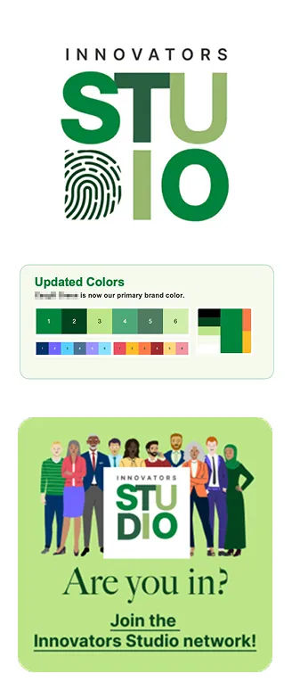
- Its own look, still inside corporate guidelines
- Bright, high-energy, hard to miss
- Templates people actually wanted to use
- One system every internal team could follow
Illustrations
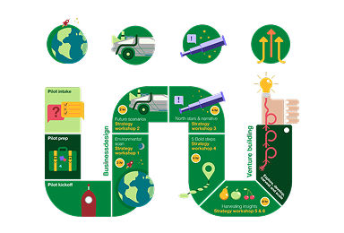
- Custom scenes showing what the Studio is for
- Pictures of people, not process diagrams
Badges
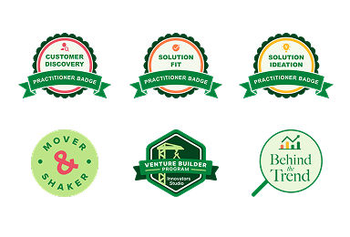
- Skills and milestones you can earn
- Badges worth collecting
Storytelling
Once the look landed, we translated the language. Innovation work tends to drown in its own vocabulary, so we built a content template library for presentations, newsletters, and podcast promos that did the hard part for people. Clear hierarchy. Steady pacing. One idea per slide instead of five. Anyone in the network could pick one up and tell a credible story without losing the substance underneath.
Presentations
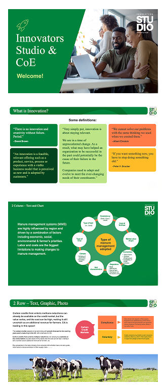
- One branded template set for everyone
- A consistent way to show data
- Room for speakers to make it their own
- Pacing that keeps a room awake
Newsletters
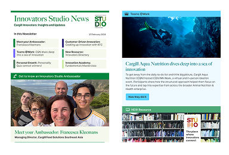
- Updates that keep the priorities visible
- Layout that lets readers decide fast
Podcast promos
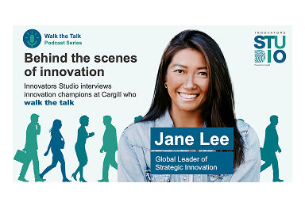
- Puts internal voices in front of the network
- A look that matches each episode’s theme
Campaigns
With a shared voice in place, we put it to work. Campaigns, one-pagers, and business model templates each gave intrapreneurs one clear next step. Apply to a program, come to an event, or carry an idea into next quarter’s planning. The campaigns held a consistent thematic identity across email, intranet, and event surfaces, so a single launch felt like a single launch, not five disconnected nudges.
Campaigns
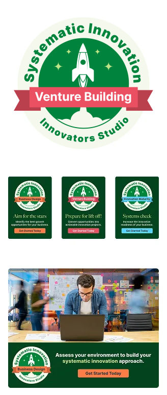
- One identity across every piece
- Graphics built around each launch theme
- Ready-made headlines and messaging
- Layouts for campaigns that run in several places
- A version for every format it has to run in
One pagers
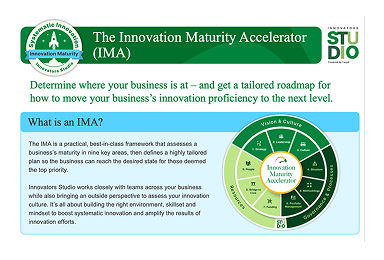
- A program explained on one page
- What it’s for and why it’s worth your time
- Exactly how to take part
Business models
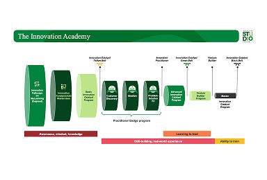
- Frameworks that fit a complex idea on one page
Studio portal
And once people showed up, we needed somewhere for them to stay. The Studio portal, built on SharePoint, pulled the work into one home. A community hub that showed what others were trying, a directory that made finding the right person feel like looking up a colleague, and an academy that turned scattered learning into a real path. The portal carried the network between launches, so energy from one program didn’t bleed out before the next began.
Community hub
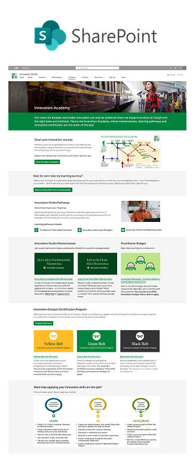
- Structure that points people to a decision
- Layouts for news and member spotlights
- Cues that invite people to keep looking
- Organized around how people actually work
- Clear routes to the deeper material
Innovators directory
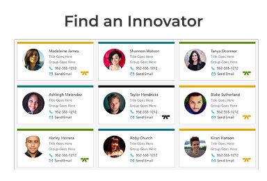
- Profiles that lead with what someone knows
- Tools for finding the right person to work with
Innovation academy
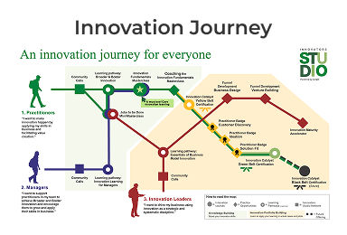
- A learning path for each role
- See how far along you are
The impact
Brand and platform together turned an invisible network into a visible community. Intrapreneurs stopped working around the system and started bringing their ideas through it.